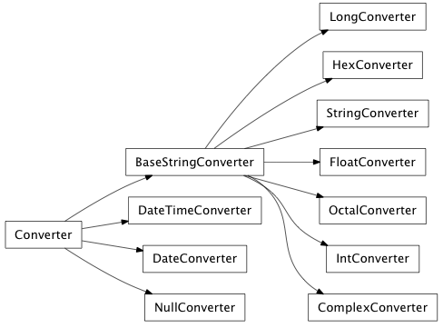
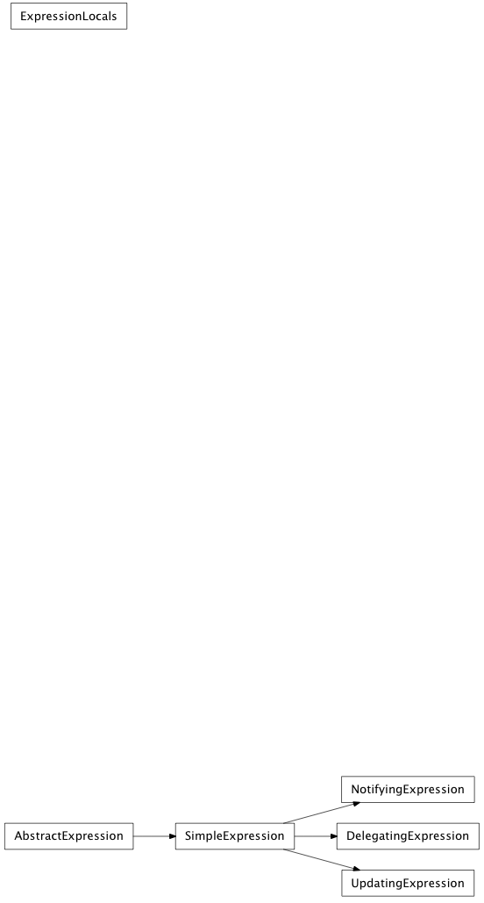

The core implementation provides all the necessary machinery to create a thin layer over backend widgets and produce the traits View objects.

A dialog’s result (depending on how it was closed)
| value | description |
|---|---|
| accepted | The user accepted the dialog. |
| rejected | (default) The user declined the default result. |
Generic orientation values.
| value | description |
|---|---|
| horizontal | Horizontal orientation |
| vertical | Vertical orientation |
The position of the tabs in a Tabbed container.
| value | description |
|---|---|
| top | (default) Place tabs above the main content. |
| bottom | Place tabs below the main content. |
| left | Place tabs to the left of the main content. |
| right | Place tabs to the right of the main content. |
Horizontal alingment.
| value | description |
|---|---|
| left | (default) Align left |
| right | Align right |
| center | Align center |
A container’s layout style, based on the order of insertion.
| value | description |
|---|---|
| left_to_right | (default) Position children from left to right. |
| right_to_left | Position children from right to left. |
| top_to_bottom | Position children from top to bottom. |
| bottom_to_top | Position children from bottom to top. |
A window’s modality specifies whether it captures focus.
| value | description |
|---|---|
| non_modal | (default) The window is not modal. |
| window_modal | The window blocks input to its parent, and all ancestor windows. |
| application_modal | The window blocks input to all other windows in the application. |
The position of ticks for a control.
| value | description |
|---|---|
| not_ticks | (default) Do not display ticks. |
| left | Display ticks to the left of the element. |
| right | Display ticks to the right of the element. |
| top | Display ticks above the element. |
| bottom | Display ticks below the element. |
| both | Display ticks both above the element and below it, or to both the left and the right. This might vary with Orientation. |
The ordering of a sort.
| value | description |
|---|---|
| ascending | Elements will be in ascending order. |
| descending | Elements will be in descending order. |
The result of a validation function.
| value | description |
|---|---|
| invalid | The input was clearly invalid. |
| indermediate | The input is invalid, but further input could make it valid. |
| acceptable | The input is valid. |
The strength of widget expand and clip preferences for hug and resist_clip.
| value | description |
|---|---|
| ignore | No constraint shuld be created. |
| weak | The constraint should be created, but is weak. |
| strong | The constraint should be created, but is strong. |
| required | The constraint should be created, and is required. |
Bases: enaml.util.enum.Enum
Predefined text labels for buttons.
Do not display buttons.
Agree.
Open.
Save changes.
Reject changes.
Close without accepintg.
Discard changes.
Apply changes.
Reset changes.
Restore defaults.
Get help.
Save all changes.
Accept once.
Accept this choice, and subsequent choices.
Reject once.
Reject this choice, and subsequent choices.
Abort updates.
Retry action.
Ignore.
Display both an OK button and a CANCEL button.
Display both a YES button and a NO button.
Bases: enaml.util.enum.Enum
The type or purpose of data in a model.
Display data prominently, as text.
Render the data as an icon.
Render the data in an editor-friendly form.
Display the data as tooltip text.
Display the data in the status bar.
Display the data for “What’s This?” mode.
The data specifies a font.
The data specifies text alignment.
The data represents a background display style.
The data represents a foreground display style.
Determine whether an item is in the checked state.
The data is a size hint for display in views.
The data corresponds to a user.
A tuple containing all display roles.
Bases: enaml.util.enum.Enum
Specify the actions that can be performed on model items.
The item is not configured for user interaction via a view.
The item can be selected in a view.
The item can be edited in a view.
The item can be dragged.
Another item can be dropped onto this one.
The item’s “checked” state can be changed from a view.
This item permits user interaction in a view.
The item is checkable, and it has three distinct states.
Bases: enaml.util.enum.Enum
The type of a text search.
An exact match.
The data contains the sought item.
The data starts with the search term.
The data ends with the search term.
A regular expression match.
Match all items.
Search for a string literal.
Search in a case-sensitive manner.
Wrap from the bottom of the text to the top. Continue searching.
Search recursively.

Bases: object
Map values from an Enaml component to userspace models and vice versa.
Converters can be used to translate a values between the userspace models and the Enaml components or toolkit widgets. For example, a Converter can be used to synchronize a Field’s string value with an integer attribute.
Enaml provides several base Converters to be used with components like the Field. Custom converters can be created by subclassing and implementing the to_component() and from_component methods.
Note
To avoid race conditions and hard to track bugs ‘to_component’ and ‘from_component’ should be inverse functions. Thus the following expression should hold:
val == Converter.from_component(Converter.to_component(val))
Bases: enaml.converters.Converter
A simple pass through converter which does not perform any value modification.
Bases: enaml.converters.Converter
A simple abstract Converter that converts a userspace value to a string.
This is an abstract class that defines only the to_component method. Subclasses need to implement the from_component method in order to have a fully functional Converter. Subclasses derived from this class are suitable for use in Enaml Field components.
Bases: enaml.converters.BaseStringConverter
A simple Converter that converts a userspace value to a string and back.
Note
The class methods are only symmetric when the userspace value is a string. For other types a custom from_component method is needed.
Bases: enaml.converters.BaseStringConverter
Convert an integer value to a string and back.
Bases: enaml.converters.BaseStringConverter
Convert an long integer value to a string and back.
Bases: enaml.converters.BaseStringConverter
Convert a float value to a string and back.
Bases: enaml.converters.BaseStringConverter
Convert a complex value to a string and back.
Bases: enaml.converters.BaseStringConverter
Convert between a string and a base-16 integer.
Bases: enaml.converters.BaseStringConverter
Convert from a widget to a base-8 integer.
Bases: enaml.converters.Converter
Convert between dates and strings.

Bases: object
A mapping object that will first look in the provided locals dictionary and finally by walking up the tree of components looking for attributes.
Note
When setting items on this mapping, the values are stored in an internal dictionary. Modifying the f_locals is not desired since that would effect all other expressions that operate with those locals. However, we must support assignment since that’s required to make list comprehensions work.
Strong references are kept to all objects passed to the constructor, so care should be taken in managing the lifetime of these scope objects since their use is likely to create reference cycles. (It’s probably best to create these objects on-the-fly when needed)
Parses an expression ast, looking for attributes references in the objects attribute space.
Given an ast.Expression node and an objet, returns the set of tuples which are (name, object) parents. The name is an attribute name an the object is the object which contains the trait attribute and is either ‘obj’ itself or some ancestor of obj.
| Parameters: |
|
|---|---|
| Returns: | result (set) - The set of (name, object) pairs referred to in the expression that are trait attributes on some ancestor of obj. |
Bases: object
Bases: enaml.expressions.AbstractExpression
A concrete implementation of AbstractExpression that provides a default attribute value by evaluating the expression.
See Also
AbstractExpression
Bases: enaml.expressions.SimpleExpression
A dynamically updating concrete expression object.
The expression is parsed for trait attribute references and when any of those traits in the expression change, the expression is evaluated and the value of the component attribute is updated.
Bases: enaml.expressions.SimpleExpression
A concrete expression object that performs two-way binding on constructs of the from ‘foo.bar’
The notification handler to update the component object.
When this method is called, the delegate expression is evaluated and the results are assigned to the appropriate attribute on the component.
We guard against circular notifications, but try to ensure that we end up in a consistent state, ie. when all is said and done, the object and the delegate end up with the same value.
The notification handler to update the delegate object.
When this method is called, the delegate expression is updated with the appropriate value from the component.
We guard against circular notifications, but try to ensure that we end up in a consistent state, ie. when all is said and done, the object and the delegate end up with the same value.
Bases: enaml.expressions.SimpleExpression
A concrete expression object that will eval an expression when the attribute on the object changes.
Bases: tuple
arguments(obj, name, old, new)
Alias for field number 1
Alias for field number 3
Alias for field number 0
Alias for field number 2

Bases: exceptions.Exception
A general exception used to indicate an error with Enaml or the Enaml runtime that doesn’t fit the semantics of any other Python standard exception.
Bases: enaml.exceptions.EnamlError
Derived from EnamlError and used to indicate an Error in the syntax of a .enaml file.
Bases: enaml.exceptions.EnamlError
An EnamlError that occurs during the execution of an Enaml script that couldn’t be caught at compile time but prevents the runtime from continuing to execute the script.
Context manager to temporarily add a TraitsExceptionHandler
We use a context manager to ensure that the exception handler gets cleared no matter what. Default behaviour is to use the null_handler with exceptions re-raised, which means any exceptions which occur will be passed through.
Bases: object
Context manager to that manages error state of shell objects.
Any exceptions which occur within a with statement using this context will get swallowed and set into the exception trait of the shell object.
Bases: enaml.exceptions.ShellExceptionContext
Combination of a ShellExceptionContext and a notification_context
Default behaviour is to use the null_handler with exceptions re-raised, which means any exceptions which occur during traits notification will be caught and set to the shell object’s exception trait.
Bases: traits.has_traits.HasStrictTraits
The constructor class to use to populate the toolkit.
A reference (stored weakly) to the toolkit in which this constructor is contained. It is used to set the toolkit attribute on the components as they are created.
A callable object which returns the shell class to use for the widget.
A callable object which returns the abstract implementation class to use for the widget.
Bases: dict
The Enaml toolkit object class which facilitates easy gui toolkit independent backend development and use. The Toolkit is a dict subclass which is injected between the module and builtin scopes when executing an Enaml function or expression.
XXX - more documentation
A classmethod that returns the currently active toolkit, or the default toolkit if there is not active toolkit context.
A classmethod that returns the default toolkit, creating one if necessary.
Overridden from dict.update to apply style types to the constructors.
Overridden from dict.setdefault to apply style types to the constructors.
Returns the default style sheet instance for this toolkit.
Returns the app creation function for this toolkit.
Returns the start app function for this toolkit.
Returns the application object for this toolkit.
Returns the function for invoking a function later in the event loop.
Returns the function for invoking a function some ms later in the event loop.
Returns the function for handling exceptions on a control object that would otherwise be swallowed.
Bases: object
A sys.meta_path finder object for enaml modules.
An instance of this class can be added to sys.meta_path to enable the import of enaml files using the normal Python import machinery.
Returns the ast generated by the enaml parser.
| Parameters: | enaml_path (string) – The full path to the .enaml file. |
|---|